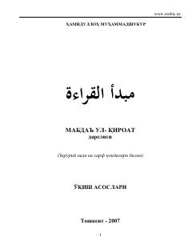

MZArab tili grammatikasi va o'qish asoslarini o'rgatuvchi ommabop darslik.
Ushbu darslik Sun'atulloh Bekpo'latning 'Mabda'ul-qiroat' asari asosida tayyorlangan bo'lib, arab tili grammatikasi (nahv va sarf) qoidalarini o'z ichiga oladi. Kitobda matnlarning grammatik tahlili va zaruriy qoidalar o'zbek tilida sodda va tushunarli tarzda bayon etilgan.